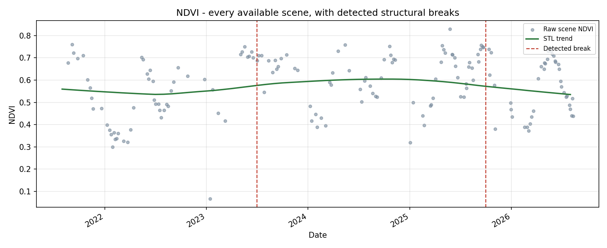

A separate branch from the moisture monitoring above: every available raw Sentinel-2 scene over a chosen bounding box (no compositing), decomposed with STL (trend + season + remainder) and searched for changepoints with ruptures' PELT - the same conceptual approach BFAST (Verbesselt et al.) is built on, via GPU-free, pip-installable libraries. Treat detected breaks as candidates to investigate, not calibrated alerts.
Loading detected breaks…

Each row is one detected changepoint in the trend component: the fitted trend level in the ~3 months before vs. after, and the resulting delta.
| Date | Trend before | Trend after | Delta | Read |
|---|---|---|---|---|
| Loading… | ||||
config.py (ALERT_BBOX, ALERT_YEARS,
BFAST_PENALTY_SCALE) - defaults to the client plot's own footprint,
but can point at any area of interest.